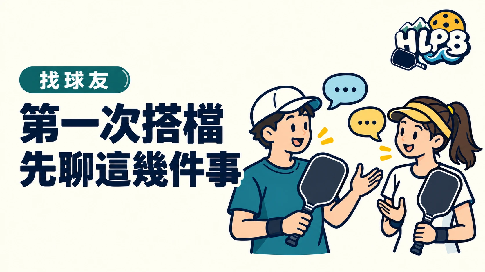

第一次搭檔，先認識彼此、確認怎麼溝通，比分不清楚就先問。到花蓮參加臨打，不一定每次都跟熟人配對。開打前花一點時間確認，比打到一半才發現彼此想法不同，更容易配合。
開打前，可以先確認什麼？
| 確認項目 | 需要說清楚的內容 |
|---|---|
| 彼此程度 | 是否剛開始打，對規則與計分熟不熟。 |
| 喊球方式 | 需要接球或讓球時，如何清楚提醒搭檔。 |
| 這場的目的 | 輕鬆交流或練習，先確認彼此期待。 |
以上是 HLPB 的溝通建議，並非官方規定的固定流程。
搭檔失誤時，要不要提醒？
USA Pickleball 的運動家精神指南建議，對搭檔保持尊重與支持，避免批評，也不要在對方未提出需求時主動教導。
想給技術建議，先確認對方是否想聽。比分、規則與安全問題需要確認，技術上的習慣則不用每球都糾正。
在花蓮找臨打，先確認報名方式
可從 HLPB 揪打球頁查看協會官方 LINE 與 PickleTown 入口。能否參加、程度限制與報名方式，以各場主辦方的公告為準。
來源：USA Pickleball 運動家精神指南。查證：2026/10/8。
最後查證：2026-10-08｜資料來源：USA Pickleball
返回文章列表